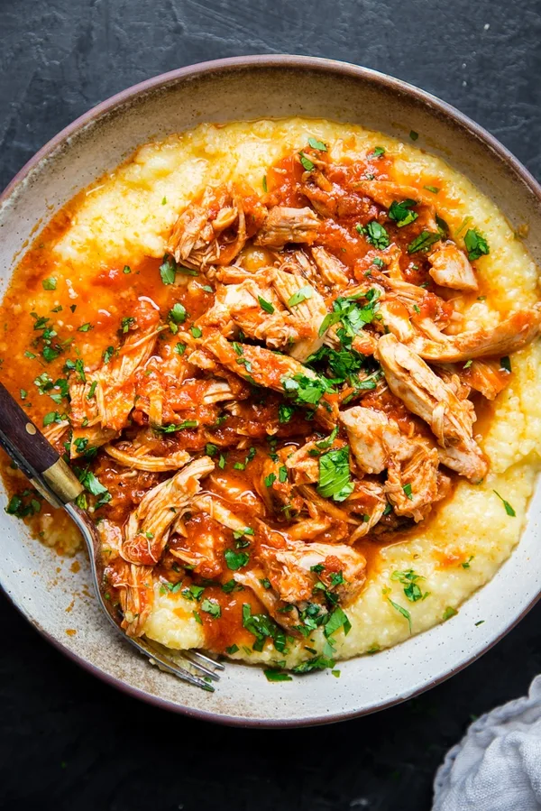

Marinara Chicken and Polenta

Description
Once you go Instant Pot, there’s just no going back, is there? Especially when it
comes to making chicken for dinner, the Instant Pot has made our lives so much easier.
This stupid-easy chicken marinara recipe, which has only three ingredients, would be
fast even without an Instant Pot. But the recipe and Instant Pot combine to make a
dinner that’s so basic and brainless, we barely have words for how do-able this meal is.
Ingredients
- 8 boneless skinless chicken thighs (2lbs)
- 2 tsp sea salt
- 24 oz jar of marinara sauce
- 4 cups chicken stock
- 1 cup of polenta
- Flat leaf parsley
Steps
- Sprinkle the chicken thighs all over with 1 teaspoon salt. Add the chicken thighs
and marinara to a 6 quart Instant Pot, stir to combine.
- Secure the lid. Choose Pressure Cook on HIGH for 5 minutes.
- Let the pressure release naturally for 10 minutes before flipping the valve and
releasing the remaining pressure.
- Meanwhile, bring the chicken stock to a boil in a medium pot over high heat.
Whisk in the polenta, reduce the heat to medium and cook, stirring often, until the
polenta is tender and has absorbed all the liquid, about 15 minutes. Stir in
remaining 1 teaspoon salt and remove from heat. Let sit for 5 minutes
- Using two forks, shred the chicken in the tomato sauce. Divide the polenta into 6
bowls. Serve the chicken and sauce over the polenta, sprinkled with parsley, if
using.
Notes
- If your marinara is thick, add ¼ cup water to prevent a Burn Error on the Instant
Pot.
- Polenta will thicken as it sits. If you are not serving it immediately, you can
reheat it gently over low heat. Whisking in a little more chicken stock, water or
olive oil will make it smooth and creamy again.
Source: The Modern Proper